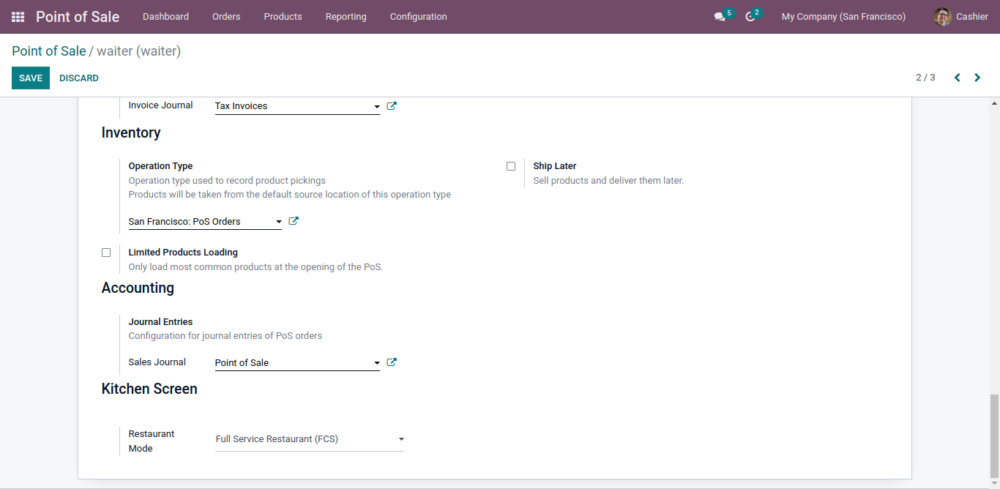
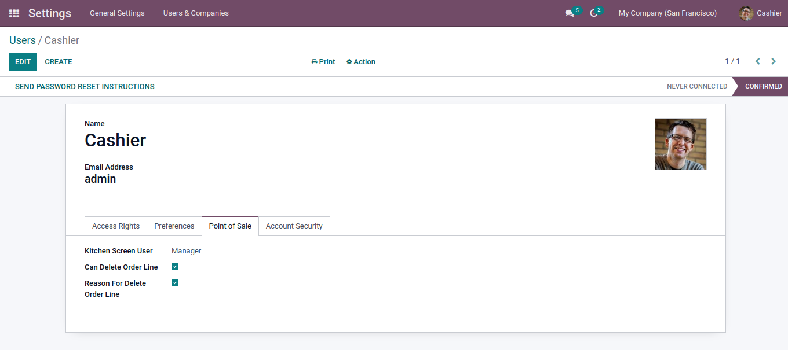
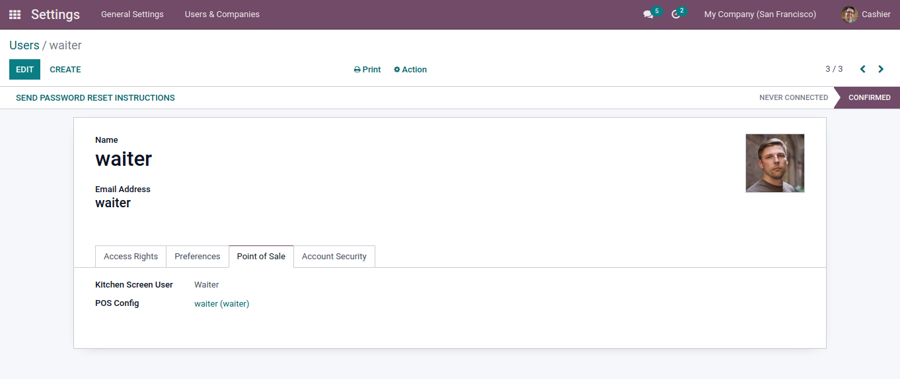
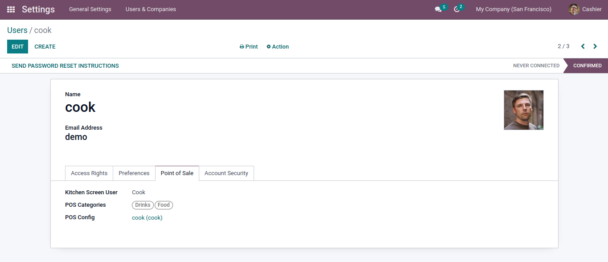
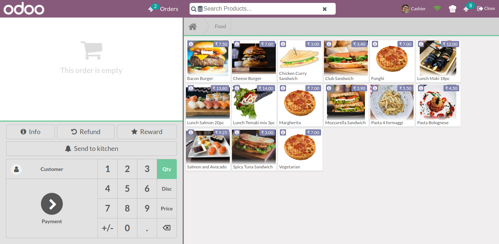
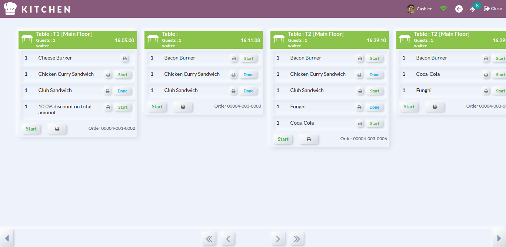
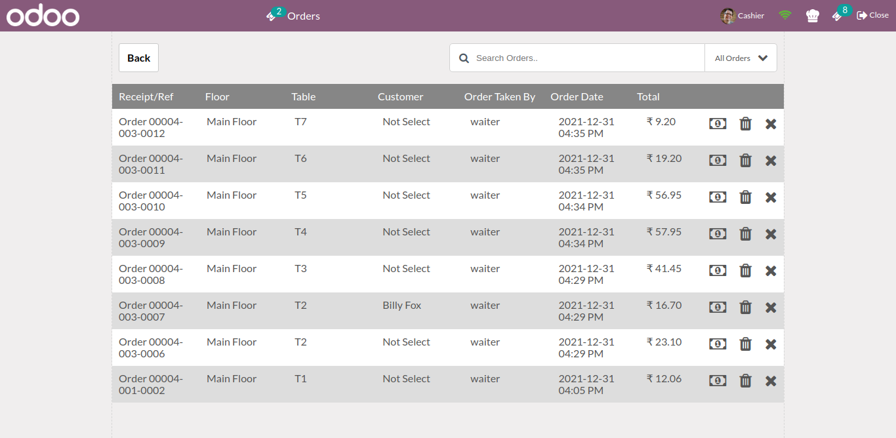
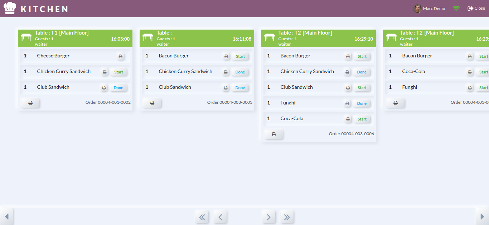

POS kitchen Screen shows orders and their state to Cook and Manager
Note:
This module is tested and working in Odoo Enterprise version. And we are supporting Ubuntu OS and
not Windows OS.
Module is not compatible with "pos_hr".
Features
- Kitchen screen is for staff to see order that has been placed.
- It will also show particular table orders.
- Kitchen screen has three user role: Cook, Waiter and Manager.
- Cook can only see and update order of specified categories.
- Manger can see all categories orders and table orders.
- Manager and cook user can print receipt (Via Posbox Thermal print).
- Manager can change state based on order and product.
- Waiter can only send order to kitchen, no rights for the payment.
- Order sync screen where all send to kitchen(draft) order display with options cancel, delete and
paid.
Fast-Food/Quick Service Restaurant (QSR): Send to kitchen
button will not be visible. Order will get send to kitchen screen after payment.
Full Service Restaurant (FCS) : Send to kitchen button will
be visible to send order to kitchen screen and order will also get send to kitchen screen after
payment.

To enable kitchen screen view, here is the configuration.
You can set kitchen screen user as cook or manger and assign
categories by which you can give right to see order that belongs to given category.
Separate pos should be configured for the cook and waiter.



Send to kitchen button can be used for table service.
For counter service simply place order, and it will send
order to kitchen.
If user is manager, "Chef Hat" icon and nearby that Order
Sync Icon will visible.

Manager can see screen that is shown below by clicking
"Chef Hat" icon.

Manager can see screen that is shown below by clicking
"Order Sync Icon" icon.
Only orders which is Send to kitchen visible in Order Sync
Screen.
Order Sync Screen with options Paid, Cancel and Delete
order.

we can see a screen shown below when cook will log in.
As per order progress, cook can update state.
For table service restaurants, order will be saved in cart
and you can see the order status.

Release Notes
Release Update - Jan 08, 2022 Version - 15.0.1.0.1
Bug Fixes
Issue Fixed With Fast Food Mode
Release Update - Jan 04, 2022 Version - 15.0.1.0.0
Initial Release
NOTE:
We give 60 days support for our customers. Before trying in your live db, please ask us to provide
you for test link. If any other custom modules are installed and because of that some errors occurs
then we charge extra.